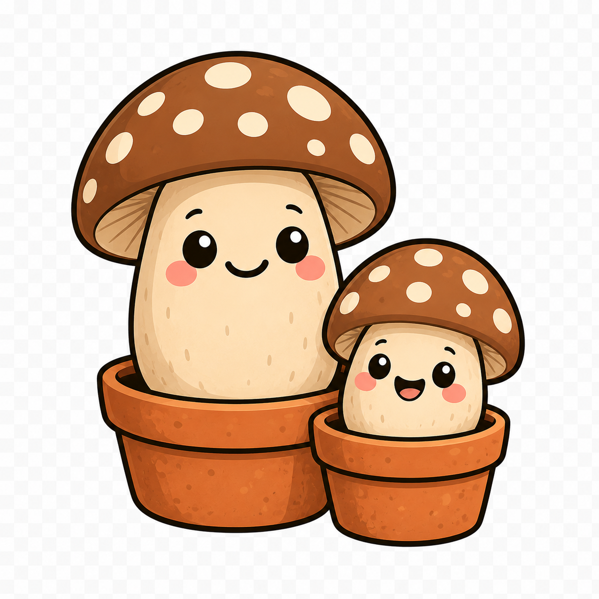

Our little memory game: the cards flash, then flip face-down — find every matching mushroom. Each round adds two more cards. Match the 🏷️ reward cards to unlock discounts, and set a high score for free shipping!
Match the reward card that appears in round 4.
Another reward card waits in round 15.
Set a new high score.
If the cactus is the slow grow, mushrooms are the fast one. Sow, mist, and watch gourmet mushrooms burst out of the jar in a week or two — then pick them, fry them, and eat dinner you grew yourselves.

Cactus teaches patience. Mushrooms teach the opposite — instant, dramatic payoff. From a quiet jar of substrate, tiny pins appear almost overnight and then double in size every day until a full cluster spills out of the lid. For a kid, it's pure magic: there's something new to see every single morning, and at the end you get to eat what you grew.
It's the perfect companion to the cactus. One slow, one fast — together they make the whole "growing things with Dad" adventure feel complete.
Our kits are strictly gourmet, edible species — think pearl oyster, lion's mane, and other delicious culinary mushrooms. These are the kinds you'd happily pay good money for at a farmers' market, grown fresh on your own bench. They are never psychoactive, and everything about the kit is built to be safe, legal, and 100% family-friendly. (As it should be — Archy's only interested in the ones you can put in a stir-fry.)
Mix the culture through the substrate, seal the jar.
White mycelium spreads through the jar over ~1–2 weeks.
Open up, mist daily, and watch mushrooms pin and grow fast.
Harvest, cook, and eat dinner you grew together.